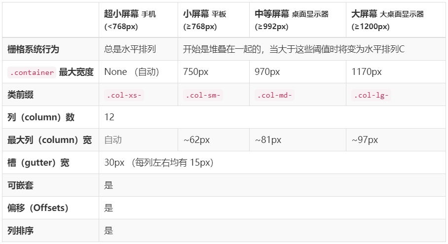

<!DOCTYPE html>
<html>
<head><meta name="generator" content="Hexo 3.8.0">
  <meta charset="utf-8">
  
  <title>使用网格grid布局实现bootstrap的栅格系统 | maczyt的网络日志</title>
  <meta name="viewport" content="width=device-width, initial-scale=1, maximum-scale=1">
  <meta name="description" content="记得在接触Bootstrap框架的时候，主要就是被其栅格系统所吸引，对于当时构建一个响应式的网站特别方便，记得当时学Bootstrap还买了一些书(基本都是官网文档的复制黏贴😔)，这就是英语太戳的弊端(想要学习一手资料还得好好学习英语)。最近在学习新技术grid布局，发现其用来实现栅格系统尤其方便，让我们一起coding吧。">
<meta name="keywords" content="CSS,页面布局">
<meta property="og:type" content="article">
<meta property="og:title" content="使用网格grid布局实现bootstrap的栅格系统">
<meta property="og:url" content="https://maczyt.github.io/2019/07/13/使用网格grid布局实现bootstrap的栅格系统/index.html">
<meta property="og:site_name" content="maczyt的网络日志">
<meta property="og:description" content="记得在接触Bootstrap框架的时候，主要就是被其栅格系统所吸引，对于当时构建一个响应式的网站特别方便，记得当时学Bootstrap还买了一些书(基本都是官网文档的复制黏贴😔)，这就是英语太戳的弊端(想要学习一手资料还得好好学习英语)。最近在学习新技术grid布局，发现其用来实现栅格系统尤其方便，让我们一起coding吧。">
<meta property="og:locale" content="default">
<meta property="og:image" content="https://maczyt.github.io/2019/07/13/使用网格grid布局实现bootstrap的栅格系统/grid-param.png">
<meta property="og:updated_time" content="2019-07-13T14:58:06.546Z">
<meta name="twitter:card" content="summary">
<meta name="twitter:title" content="使用网格grid布局实现bootstrap的栅格系统">
<meta name="twitter:description" content="记得在接触Bootstrap框架的时候，主要就是被其栅格系统所吸引，对于当时构建一个响应式的网站特别方便，记得当时学Bootstrap还买了一些书(基本都是官网文档的复制黏贴😔)，这就是英语太戳的弊端(想要学习一手资料还得好好学习英语)。最近在学习新技术grid布局，发现其用来实现栅格系统尤其方便，让我们一起coding吧。">
<meta name="twitter:image" content="https://maczyt.github.io/2019/07/13/使用网格grid布局实现bootstrap的栅格系统/grid-param.png">
  
    <link rel="alternate" href="/atom.xml" title="maczyt的网络日志" type="application/atom+xml">
  
  
    <link rel="icon" href="/favicon.ico">
  
  
    
  
  <link rel="stylesheet" href="/css/style.css">
  

</head>
</html>
<body>
  <div id="container">
    <div id="wrap">
      <header id="header">
  <div id="banner"></div>
  <div id="header-outer" class="outer">
    
    <div id="header-inner" class="inner">
      <nav id="sub-nav">
        
          <a id="nav-rss-link" class="nav-icon" href="/atom.xml" title="RSS Feed"></a>
        
        <a id="nav-search-btn" class="nav-icon" title="搜索"></a>
      </nav>
      <div id="search-form-wrap">
        <form action="//google.com/search" method="get" accept-charset="UTF-8" class="search-form"><input type="search" name="q" class="search-form-input" placeholder="Search"><button type="submit" class="search-form-submit">&#xF002;</button><input type="hidden" name="sitesearch" value="https://maczyt.github.io"></form>
      </div>
      <nav id="main-nav">
        <a id="main-nav-toggle" class="nav-icon"></a>
        
          <a class="main-nav-link" href="/">首页</a>
        
          <a class="main-nav-link" href="/archives">归档</a>
        
          <a class="main-nav-link" href="/about">关于</a>
        
      </nav>
      
    </div>
    <div id="header-title" class="inner">
      <h1 id="logo-wrap">
        <a href="/" id="logo">maczyt的网络日志</a>
      </h1>
      
    </div>
  </div>
</header>
      <div class="outer">
        <section id="main"><article id="post-使用网格grid布局实现bootstrap的栅格系统" class="article article-type-post" itemscope="" itemprop="blogPost">
  <div class="article-meta">
    <a href="/2019/07/13/使用网格grid布局实现bootstrap的栅格系统/" class="article-date">
  <time datetime="2019-07-13T10:27:34.000Z" itemprop="datePublished">2019-07-13</time>
</a>
    
  </div>
  <div class="article-inner">
    
    
      <header class="article-header">
        
  
    <h1 class="article-title" itemprop="name">
      使用网格grid布局实现bootstrap的栅格系统
    </h1>
  

      </header>
    
    <div class="article-entry" itemprop="articleBody">
      
        <!-- Table of Contents -->
        
        <p>记得在接触Bootstrap框架的时候，主要就是被其栅格系统所吸引，对于当时构建一个响应式的网站特别方便，记得当时学Bootstrap还买了一些书(基本都是官网文档的复制黏贴😔)，这就是英语太戳的弊端(<em>想要学习一手资料还得好好学习英语</em>)。最近在学习新技术grid布局，发现其用来实现栅格系统尤其方便，让我们一起coding吧。</p>
<a id="more"></a>
<h2 id="栅格系统"><a href="#栅格系统" class="headerlink" title="栅格系统"></a>栅格系统</h2><blockquote>
<p>随着屏幕或视口（viewport）尺寸的增加，系统会自动分为最多12列</p>
</blockquote>
<h3 id="栅格参数"><a href="#栅格参数" class="headerlink" title="栅格参数"></a>栅格参数</h3><p></p>
<h3 id="编写栅格"><a href="#编写栅格" class="headerlink" title="编写栅格"></a>编写栅格</h3><p>Bootstrap的栅格是移动端优先的，所以我们定义列的时候，先定义大屏幕的列样式，依次定义到最小屏幕的列样式，这样可以使得最后定义的样式覆盖前面定义的样式，从而达到移动端优先的效果。</p>
<p>如何把一个grid划分为12列呢？</p>
<p>grid提供了<code>grid-template-columns</code>来设置列宽，使用关键字<code>fr</code>,用来表示比例关系，所以设置为：<code>grid-template-columns: 1fr 1fr</code>,效果是该grid分为两列，每列所占据的比例为50%。所以我们要分成12列，只需要写12个<code>1fr</code>即可，查看了文档，发现有<code>repeat</code>方法来重复，所以只需要设置为<code>grid-template-columns: repeat(12, 1fr)</code>便可把grid划分为均等的12列。然后依次对1列宽到12列举的样式进行编写。</p>
<p>由于是12列，如果手工写，维护性不好且代码量大，这里使用了<code>less</code>作为预处理器来编写，首先我们先定义个函数。</p>
<figure class="highlight less"><table><tr><td class="gutter"><pre><span class="line">1</span><br><span class="line">2</span><br><span class="line">3</span><br><span class="line">4</span><br><span class="line">5</span><br></pre></td><td class="code"><pre><span class="line"><span class="selector-class">.loop-col</span>(<span class="variable">@name</span>, <span class="variable">@n</span>, <span class="variable">@i</span>) <span class="keyword">when</span>(<span class="variable">@i</span> &lt;= <span class="variable">@n</span>) &#123;</span><br><span class="line">  <span class="selector-class">.col-</span><span class="variable">@&#123;name&#125;</span><span class="selector-tag">-</span><span class="variable">@&#123;i&#125;</span> &#123;</span><br><span class="line">    <span class="attribute">grid-column</span>: span <span class="variable">@i</span>;</span><br><span class="line">  &#125;</span><br><span class="line">&#125;</span><br></pre></td></tr></table></figure>
<p><code>grid-column</code>用来设置项目占据几列宽度，如需占据6列宽，设置为: <code>grid-column: span 6</code>。</p>
<p>由于我们是移动端(也就是超小屏幕)优先，所以我们默认让非超小屏幕(sm、md、lg)的每列占据一行，也就是<code>grid-column: span 12</code>，然后当媒体查询到对应的屏幕大小，再进行设置。</p>
<p>为了便于设置每列占据一行，定义以下函数:</p>
<figure class="highlight less"><table><tr><td class="gutter"><pre><span class="line">1</span><br><span class="line">2</span><br><span class="line">3</span><br><span class="line">4</span><br><span class="line">5</span><br><span class="line">6</span><br></pre></td><td class="code"><pre><span class="line"><span class="selector-class">.loop-big-col</span>(<span class="variable">@name</span>, <span class="variable">@n</span>, <span class="variable">@i</span>) <span class="keyword">when</span>(<span class="variable">@i</span> &lt;= <span class="variable">@n</span>) &#123;</span><br><span class="line">  <span class="selector-class">.col-</span><span class="variable">@&#123;name&#125;</span><span class="selector-tag">-</span><span class="variable">@&#123;i&#125;</span> &#123;</span><br><span class="line">    <span class="attribute">grid-column</span>: span <span class="number">12</span>;</span><br><span class="line">  &#125;</span><br><span class="line">  <span class="selector-class">.loop-big-col</span>(<span class="variable">@name</span>, <span class="variable">@n</span>, <span class="variable">@i</span> + <span class="number">1</span>);</span><br><span class="line">&#125;</span><br></pre></td></tr></table></figure>
<hr>
<p>下面我们来加入媒体查询:</p>
<figure class="highlight less"><table><tr><td class="gutter"><pre><span class="line">1</span><br><span class="line">2</span><br><span class="line">3</span><br><span class="line">4</span><br><span class="line">5</span><br><span class="line">6</span><br><span class="line">7</span><br><span class="line">8</span><br><span class="line">9</span><br><span class="line">10</span><br><span class="line">11</span><br><span class="line">12</span><br><span class="line">13</span><br><span class="line">14</span><br><span class="line">15</span><br><span class="line">16</span><br><span class="line">17</span><br><span class="line">18</span><br><span class="line">19</span><br><span class="line">20</span><br><span class="line">21</span><br><span class="line">22</span><br><span class="line">23</span><br><span class="line">24</span><br><span class="line">25</span><br><span class="line">26</span><br><span class="line">27</span><br><span class="line">28</span><br></pre></td><td class="code"><pre><span class="line"><span class="comment">// 非超小屏幕，默认都独占一行</span></span><br><span class="line"><span class="comment">// .col-md-&#123;1-12&#125; .col-sm-&#123;1-12&#125; .col-lg-&#123;1-12&#125; grid-column: span 12</span></span><br><span class="line"><span class="selector-class">.loop-big-col</span>(lg, <span class="number">12</span>, <span class="number">1</span>);</span><br><span class="line"><span class="selector-class">.loop-big-col</span>(md, <span class="number">12</span>, <span class="number">1</span>);</span><br><span class="line"><span class="selector-class">.loop-big-col</span>(sm, <span class="number">12</span>, <span class="number">1</span>);</span><br><span class="line"></span><br><span class="line"><span class="comment">//超小屏幕列设置</span></span><br><span class="line"><span class="comment">// 因为移动端优先，所以我们不使用媒体查询，默认设置xs的列样式</span></span><br><span class="line"><span class="comment">// .col-xs-&#123;1-12&#125; grid-column: span &#123; 1-12 &#125;</span></span><br><span class="line"><span class="selector-class">.loop-col</span>(xs, <span class="number">12</span>, <span class="number">1</span>);</span><br><span class="line"></span><br><span class="line"><span class="keyword">@media</span> (<span class="attribute">min-width</span>: <span class="number">768px</span>) &#123;</span><br><span class="line">  <span class="comment">/* 小屏幕 */</span></span><br><span class="line">  <span class="comment">// 重新设置 .col-sm-&#123;1-12&#125; grid-column: span &#123; 1-12 &#125;</span></span><br><span class="line">  <span class="selector-class">.loop-col</span>(sm, <span class="number">12</span>, <span class="number">1</span>);</span><br><span class="line">&#125;</span><br><span class="line"></span><br><span class="line"><span class="keyword">@media</span> (<span class="attribute">min-width</span>: <span class="number">992px</span>) &#123;</span><br><span class="line">  <span class="comment">/* 中等屏幕 */</span></span><br><span class="line">  <span class="comment">// .col-md-&#123;1-12&#125; grid-column: span &#123; 1-12 &#125;</span></span><br><span class="line">  <span class="selector-class">.loop-col</span>(md, <span class="number">12</span>, <span class="number">1</span>);</span><br><span class="line">&#125;</span><br><span class="line"></span><br><span class="line"><span class="keyword">@media</span> (<span class="attribute">min-width</span>: <span class="number">1200px</span>) &#123;</span><br><span class="line">  <span class="comment">/* 大屏幕 */</span></span><br><span class="line">  <span class="comment">// .col-lg-&#123;1-12&#125; grid-column: span &#123; 1-12 &#125;</span></span><br><span class="line">  <span class="selector-class">.loop-col</span>(lg, <span class="number">12</span>, <span class="number">1</span>);</span><br><span class="line">&#125;</span><br></pre></td></tr></table></figure>
<p>通过上面代码，我们就可以实现一个简单的栅格系统了。<a href="https://maczyt.github.io/interview/layout/grid.html">点击查看</a></p>
<p>看到Bootstrap还支持列的偏移、列的排序，让我们来完善下吧。</p>
<h3 id="列偏移"><a href="#列偏移" class="headerlink" title="列偏移"></a>列偏移</h3><p>Bootstrap中是通过增加<code>margin</code>边距来实现偏移，<code>grid</code>中有什么属性可以支持吗？</p>
<p> <strong>(⊙﹏⊙)，暂时没找到方法支持偏移</strong></p>
<h3 id="列排序"><a href="#列排序" class="headerlink" title="列排序"></a>列排序</h3><p><code>push</code>通过设置<code>left</code>来实现，<code>pull</code>通过设置`right·来实现。</p>
<p> <strong>(⊙﹏⊙)，暂时没找到方法支持排序</strong></p>
<h2 id="补充"><a href="#补充" class="headerlink" title="补充"></a>补充</h2><p>有时候我们会需要设置列间距,我们可以通过属性<code>grid-column-gap</code>来实现。行间距则为<code>grid-row-gap</code>。</p>
<h2 id="参考文章"><a href="#参考文章" class="headerlink" title="参考文章"></a>参考文章</h2><p><a href="http://www.ruanyifeng.com/blog/2019/03/grid-layout-tutorial.html" target="_blank" rel="noopener">CSS Grid 网格布局教程</a></p>

      
    </div>
    <footer class="article-footer">
      <a data-url="https://maczyt.github.io/2019/07/13/使用网格grid布局实现bootstrap的栅格系统/" data-id="cjyzz3c1m0008r4vvhexexl17" class="article-share-link">分享</a>
      
      
      
  <ul class="article-tag-list"><li class="article-tag-list-item"><a class="article-tag-list-link" href="/tags/CSS/">CSS</a></li><li class="article-tag-list-item"><a class="article-tag-list-link" href="/tags/页面布局/">页面布局</a></li></ul>

    </footer>
  </div>
  
    
 <script src="/jquery/jquery.min.js"></script>
  <div id="random_posts">
    <h2>推荐文章</h2>
    <div class="random_posts_ul">
      <script>
          var random_count =4
          var site = {BASE_URI:'/'};
          function load_random_posts(obj) {
              var arr=site.posts;
              if (!obj) return;
              // var count = $(obj).attr('data-count') || 6;
              for (var i, tmp, n = arr.length; n; i = Math.floor(Math.random() * n), tmp = arr[--n], arr[n] = arr[i], arr[i] = tmp);
              arr = arr.slice(0, random_count);
              var html = '<ul>';
            
              for(var j=0;j<arr.length;j++){
                var item=arr[j];
                html += '<li><strong>' + 
                item.date + ':&nbsp;&nbsp;<a href="' + (site.BASE_URI+item.uri) + '">' + 
                (item.title || item.uri) + '</a></strong>';
                if(item.excerpt){
                  html +='<div class="post-excerpt">'+item.excerpt+'</div>';
                }
                html +='</li>';
                
              }
              $(obj).html(html + '</ul>');
          }
          $('.random_posts_ul').each(function () {
              var c = this;
              if (!site.posts || !site.posts.length){
                  $.getJSON(site.BASE_URI + 'js/posts.js',function(json){site.posts = json;load_random_posts(c)});
              } 
               else{
                load_random_posts(c);
              }
          });
      </script>
    </div>
  </div>

    
<nav id="article-nav">
  
    <a href="/2019/08/03/《面试系列》之什么是BFC/" id="article-nav-newer" class="article-nav-link-wrap">
      <strong class="article-nav-caption">上一篇</strong>
      <div class="article-nav-title">
        
          《面试系列》之什么是BFC?
        
      </div>
    </a>
  
  
    <a href="/2019/07/07/Cetos7安装nginx三两事/" id="article-nav-older" class="article-nav-link-wrap">
      <strong class="article-nav-caption">下一篇</strong>
      <div class="article-nav-title">Cetos7安装nginx三两事</div>
    </a>
  
</nav>

  
</article>
 
     
  <div class="comments" id="comments">
    
     
       
      <div id="cloud-tie-wrapper" class="cloud-tie-wrapper"></div>
    
       
      
      
           <div id="gitment_comments"></div>
    
  </div>
 
  

</section>
           
    <aside id="sidebar">
  
    

  
    
    <div class="widget-wrap">
    
      <div class="widget" id="toc-widget-fixed">
      
        <strong class="toc-title">文章目录</strong>
        <div class="toc-widget-list">
              <ol class="toc"><li class="toc-item toc-level-2"><a class="toc-link" href="#栅格系统"><span class="toc-number">1.</span> <span class="toc-text">栅格系统</span></a><ol class="toc-child"><li class="toc-item toc-level-3"><a class="toc-link" href="#栅格参数"><span class="toc-number">1.1.</span> <span class="toc-text">栅格参数</span></a></li><li class="toc-item toc-level-3"><a class="toc-link" href="#编写栅格"><span class="toc-number">1.2.</span> <span class="toc-text">编写栅格</span></a></li><li class="toc-item toc-level-3"><a class="toc-link" href="#列偏移"><span class="toc-number">1.3.</span> <span class="toc-text">列偏移</span></a></li><li class="toc-item toc-level-3"><a class="toc-link" href="#列排序"><span class="toc-number">1.4.</span> <span class="toc-text">列排序</span></a></li></ol></li><li class="toc-item toc-level-2"><a class="toc-link" href="#补充"><span class="toc-number">2.</span> <span class="toc-text">补充</span></a></li><li class="toc-item toc-level-2"><a class="toc-link" href="#参考文章"><span class="toc-number">3.</span> <span class="toc-text">参考文章</span></a></li></ol>
          </div>
      </div>
    </div>

  
    

  
    
  
    
  
    

  
    
  
    <!--微信公众号二维码-->


  
</aside>

      </div>
      <footer id="footer">
  
  <div class="outer">
    <div id="footer-left">
      &copy; 2014 - 2019 maczyt&nbsp;|&nbsp;
      主题 <a href="https://github.com/giscafer/hexo-theme-cafe/" target="_blank">Cafe</a>
    </div>
     <div id="footer-right">
      联系方式&nbsp;|&nbsp;369280416@qq.com
    </div>
  </div>
</footer>
 <script src="/jquery/jquery.min.js"></script>
    </div>
    <nav id="mobile-nav">
  
    <a href="/" class="mobile-nav-link">首页</a>
  
    <a href="/archives" class="mobile-nav-link">归档</a>
  
    <a href="/about" class="mobile-nav-link">关于</a>
  
</nav>
    
<script>
// Elevator script included on the page, already.
window.onload = function() {
  var elevator = new Elevator({
    selector:'.back-to-top-btn',
    element: document.querySelector('.back-to-top-btn'),
    duration: 1000 // milliseconds
  });
}
</script>
      

  
    <script>
      var cloudTieConfig = {
        url: document.location.href, 
        sourceId: "",
        productKey: "e2fb4051c49842688ce669e634bc983f",
        target: "cloud-tie-wrapper"
      };
    </script>
    <script src="https://img1.ws.126.net/f2e/tie/yun/sdk/loader.js"></script>
    

  


<!-- author:forvoid begin -->
<!-- author:forvoid begin -->

  <link rel="stylesheet" href="https://imsun.github.io/gitment/style/default.css">
  <script src="https://imsun.github.io/gitment/dist/gitment.browser.js"></script> 
  <script>
  var gitment = new Gitment({
    // id: '页面 ID', // 可选。默认为 location.href
    owner: 'maczyt',
    repo: 'maczyt.github.io',
    oauth: {
    client_id: 'ec909c607ca0603ee69f',
    client_secret: '611d57c463dd5cbcef431a48c0ff777679387238',
    }
  })
  gitment.render(document.getElementById("gitment_comments"))
</script>


<!-- author:forvoid end -->

<!-- author:forvoid end -->


  
    <script type="text/x-mathjax-config">
      MathJax.Hub.Config({
        tex2jax: {
          inlineMath: [ ['$','$'], ["\\(","\\)"]  ],
          processEscapes: true,
          skipTags: ['script', 'noscript', 'style', 'textarea', 'pre', 'code']
        }
      })
    </script>

    <script type="text/x-mathjax-config">
      MathJax.Hub.Queue(function() {
        var all = MathJax.Hub.getAllJax(), i;
        for (i=0; i < all.length; i += 1) {
          all[i].SourceElement().parentNode.className += ' has-jax';
        }
      })
    </script>
    <script type="text/javascript" src="https://cdn.rawgit.com/mathjax/MathJax/2.7.1/MathJax.js?config=TeX-AMS-MML_HTMLorMML"></script>
  


 <script src="/js/is.js"></script>


  <link rel="stylesheet" href="/fancybox/jquery.fancybox.css">
  <script src="/fancybox/jquery.fancybox.pack.js"></script>


<script src="/js/script.js"></script>
<script src="/js/elevator.js"></script>
  </div>
</body>
</html>